6. Verificação com as listas
Autor: Victor Andreozzi de La Rocque Couto · Revisor: Felipe Lopes Pedroza
Entrega: 4, Planejamento da Avaliação do Storyboard e da Análise de Tarefas (parte individual, entregue em 20/10/2026 e revista em 27/11/2026) · Funcionalidade de Victor no projeto: Avaliação de Disciplinas
Outros artefatos desta parte: 1. Visão geral · 2. Planejamento da Avaliação do Storyboard · 3. Planejamento da Avaliação da Análise de Tarefas (HTA e CTT) · 4. Planejamento do Relato dos Resultados da Avaliação do Storyboard · 5. Planejamento do Relato dos Resultados da Avaliação da Análise de Tarefas (HTA e CTT)
1. Introdução
Esta página aplica aos quatro planejamentos desta parte (2. Planejamento da Avaliação do Storyboard, 3. Planejamento da Avaliação da Análise de Tarefas (HTA e CTT), 4. Planejamento do Relato dos Resultados da Avaliação do Storyboard e 5. Planejamento do Relato dos Resultados da Avaliação da Análise de Tarefas (HTA e CTT)) os 15 itens da lista de verificação do Storyboard elaborada por Matheus, organizada pelas atividades do framework DECIDE, e depois os itens da Apresentação 4 do plano de ensino. Cada resposta é Conforme, Não conforme ou Não se aplica. Clique em um item para ver a citação de origem, a referência com a foto da página grifada e o link para o item na lista do grupo.
Na versão entregue em 20/10/2026, os itens 1, 4, 6, 9, 10, 11 e 13 não eram atendidos. Eles foram completados na versão 1.1 dos planejamentos, e as respostas abaixo valem para essa versão.
2. D: Determinar os objetivos
Item 1O planejamento da avaliação do storyboard determina os objetivos gerais da avaliação e identifica por que e para quem esses objetivos são importantes?ConformeEvidência: Linha “D” das tabelas DECIDE: os objetivos e, em “Para quem”, a equipe de design e os estudantes (Tabela 1 do planejamento do storyboard; Tabela 1 do planejamento da análise de tarefas)
Citação de origem: “D Determinar os objetivos da avaliação de IHC. O avaliador deve determinar os objetivos gerais da avaliação e identificar por que e para quem tais objetivos são importantes. O restante do planejamento da avaliação, sua execução e a apresentação dos resultados serão orientados por esses objetivos.”
Referência: Página: 280, Capítulo 11. Planejamento da Avaliação de IHC. Seção 11.8 O Framework DECIDE (D: Determinar). Livro: SIMONE DINIZ JUNQUEIRA BARBOSA, BRUNO SANTANA DA SILVA, MILENE SELBACH SILVEIRA, ISABELA GASPARINI, TICIANNE DARIN, GABRIEL DINIZ JUNQUEIRA BARBOSA, Interação Humano-Computador e Experiência do Usuário, 1ª Edição, Rio de Janeiro, 2021. Publicado em: 03/05/2021.
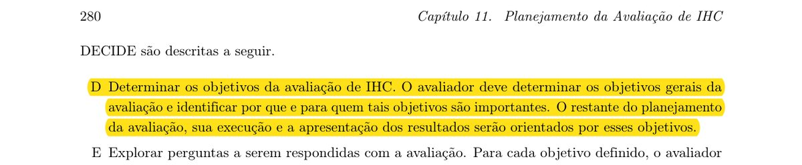
Item 2O planejamento declara o propósito do storyboard (protótipo) como pelo menos um destes fins: testar a viabilidade técnica de uma ideia; esclarecer requisitos vagos; realizar testes com usuários e avaliações; ou verificar se o rumo tomado no design é compatível com o resto do desenvolvimento do sistema?ConformeEvidência: Introdução do planejamento do storyboard: avaliar a proposta com usuários antes da prototipação em maior fidelidade
Citação de origem: “Protótipos respondem a questões e fornecem suporte aos designers para a escolha de uma dentre as várias opções. Portanto, servem para vários fins: por exemplo, testar a viabilidade técnica de uma idéia, esclarecer alguns requisitos vagos, realizar alguns testes com usuários e avaliações, ou verificar se um certo rumo que se tomou no design é compatível com o resto do desenvolvimento do sistema. Ter um desses fins como seu propósito irá influenciar o tipo de protótipo que você irá construir.”
Referência: Página: 261, Capítulo 8. Design, Prototipação e Construção. Seção 8.2.2 Por que fazer protótipos?. Livro: JENNIFER PREECE, YVONNE ROGERS, HELEN SHARP, Design de Interação: além da interação homem-computador, Editora Bookman, 2005.
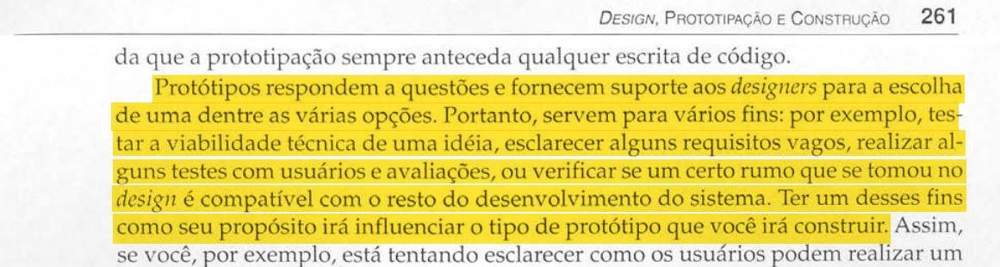
3. E: Explorar as perguntas
Item 3Para cada objetivo definido, o planejamento elabora perguntas específicas a serem respondidas durante a avaliação do storyboard, considerando o perfil dos usuários-alvo e suas atividades?ConformeEvidência: Linha “E – Explorar perguntas” das tabelas DECIDE, quatro perguntas para cada artefato, sobre a rotina do estudante da UnB
Citação de origem: “E Explorar perguntas a serem respondidas com a avaliação. Para cada objetivo definido, o avaliador deve elaborar perguntas específicas a serem respondidas durante avaliação. Essas perguntas são responsáveis por operacionalizar a investigação e o julgamento de valor a serem realizados. Elas devem considerar o perfil dos usuários-alvo e suas atividades.”
Referência: Página: 280, Capítulo 11. Planejamento da Avaliação de IHC. Seção 11.8 O Framework DECIDE (E: Explorar). Livro: SIMONE DINIZ JUNQUEIRA BARBOSA, BRUNO SANTANA DA SILVA, MILENE SELBACH SILVEIRA, ISABELA GASPARINI, TICIANNE DARIN, GABRIEL DINIZ JUNQUEIRA BARBOSA, Interação Humano-Computador e Experiência do Usuário, 1ª Edição, Rio de Janeiro, 2021. Publicado em: 03/05/2021.
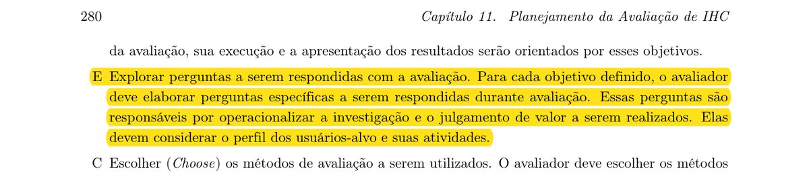
4. C: Escolher os métodos
Item 4O planejamento especifica os métodos de avaliação escolhidos e os justifica como os mais adequados para responder às perguntas e atingir os objetivos, considerando o prazo, o orçamento, os equipamentos disponíveis e o grau de conhecimento e experiência dos avaliadores?ConformeEvidência: Linha “C” das tabelas DECIDE, com a justificativa por prazo, custo, equipamento e experiência dos avaliadores
Citação de origem: “C Escolher (Choose) os métodos de avaliação a serem utilizados. O avaliador deve escolher os métodos mais adequados para responder as perguntas e atingir os objetivos esperados, considerando também o prazo, o orçamento, os equipamentos disponíveis e o grau de conhecimento e experiência dos avaliadores.”
Referência: Página: 280, Capítulo 11. Planejamento da Avaliação de IHC. Seção 11.8 O Framework DECIDE (C: Escolher). Livro: SIMONE DINIZ JUNQUEIRA BARBOSA, BRUNO SANTANA DA SILVA, MILENE SELBACH SILVEIRA, ISABELA GASPARINI, TICIANNE DARIN, GABRIEL DINIZ JUNQUEIRA BARBOSA, Interação Humano-Computador e Experiência do Usuário, 1ª Edição, Rio de Janeiro, 2021. Publicado em: 03/05/2021.
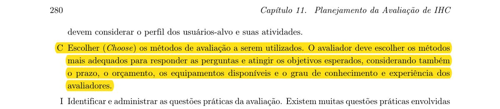
Item 5O método de avaliação do storyboard está identificado como pertencente a um dos três tipos: investigação (questionários, entrevistas, grupos de foco, estudos de campo), inspeção (o avaliador examina a solução, em geral sem usuários, para antever problemas de uso) ou observação de uso (registro de usuários realizando suas atividades para identificar problemas reais)?ConformeEvidência: Storyboard: investigação (entrevista com Think Aloud); análise de tarefas: inspeção (percurso cognitivo) seguida de checagem com usuários
Citação de origem: “Os métodos de avaliação de IHC podem ser classificados em: métodos de investigação, de observação de uso e de inspeção. Os métodos de investigação (inquiry) envolvem o uso de questionários, a realização de entrevistas, grupos de foco e estudos de campo, entre outros.” [...] “Os métodos de inspeção permitem ao avaliador examinar (ou inspecionar) uma solução de IHC para tentar antever as possíveis consequências de certas decisões de design sobre as experiências de uso. Em outras palavras, tentar identificar problemas que os usuários podem vir a ter quando interagirem com o sistema. Esses métodos geralmente não envolvem diretamente usuários e, portanto, tratam de experiências de uso potenciais, e não reais.” [...] “Os métodos de observação fornecem dados sobre situações em que os usuários realizam suas atividades, com ou sem apoio de sistemas interativos. Através do registro dos dados observados, esses métodos permitem identificar problemas reais que os usuários enfrentaram durante sua experiência de uso do sistema sendo avaliado.”
Referência: Página: 272, Capítulo 11. Planejamento da Avaliação de IHC. Seção 11.6 Qual Tipo de Método de Avaliação Escolher?. Livro: SIMONE DINIZ JUNQUEIRA BARBOSA, BRUNO SANTANA DA SILVA, MILENE SELBACH SILVEIRA, ISABELA GASPARINI, TICIANNE DARIN, GABRIEL DINIZ JUNQUEIRA BARBOSA, Interação Humano-Computador e Experiência do Usuário, 1ª Edição, Rio de Janeiro, 2021. Publicado em: 03/05/2021.
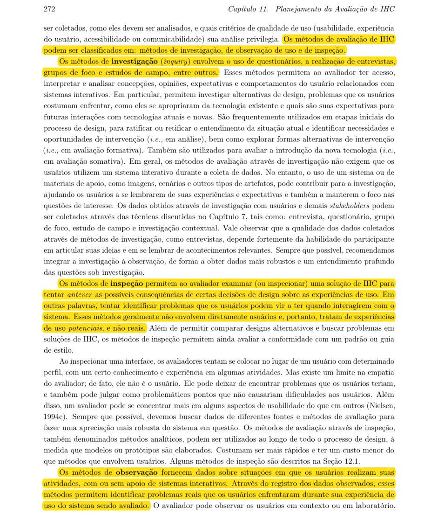
5. I: Identificar as questões práticas
Item 6O planejamento define o perfil dos participantes, de modo a representar o público-alvo (considerando fatores como idade, sexo, formação acadêmica, grau de conhecimento sobre o domínio, nível de experiência na realização das tarefas e nível de experiência no uso do sistema avaliado e de sistemas semelhantes), e define e justifica o número de participantes (por exemplo, de cinco a 12 usuários, ou cinco usuários para encontrar a maioria dos problemas da interface)?ConformeEvidência: Linha “I” das tabelas DECIDE: perfil dos participantes e número (5 a 8 no storyboard, 3 a 5 na checagem), com a razão
Citação de origem: “Os avaliadores devem buscar participantes que representem o público-alvo do sistema avaliado, ou seja, que possuam características semelhantes aos usuários típicos. A definição dos perfis de participantes pode considerar fatores como: idade, sexo, formação acadêmica, grau de conhecimento sobre o domínio, nível de experiência na realização das tarefas e nível de experiência no uso do sistema avaliado e de sistemas semelhantes, por exemplo. Sempre que possível e pertinente, o avaliador deve buscar equilibrar o número de homens e mulheres. Dumas e Redish (1999) relatam que uma avaliação de IHC em geral envolve de cinco a 12 usuários. Nielsen (2000), por sua vez, afirma que bastam cinco usuários para encontrarmos a maioria dos problemas na interface (85%, segundo o seu experimento), alcançando uma boa relação custo–benefício.”
Referência: Página: 274, Capítulo 11. Planejamento da Avaliação de IHC. Seção 11.7.2 Preparação. Livro: SIMONE DINIZ JUNQUEIRA BARBOSA, BRUNO SANTANA DA SILVA, MILENE SELBACH SILVEIRA, ISABELA GASPARINI, TICIANNE DARIN, GABRIEL DINIZ JUNQUEIRA BARBOSA, Interação Humano-Computador e Experiência do Usuário, 1ª Edição, Rio de Janeiro, 2021. Publicado em: 03/05/2021.
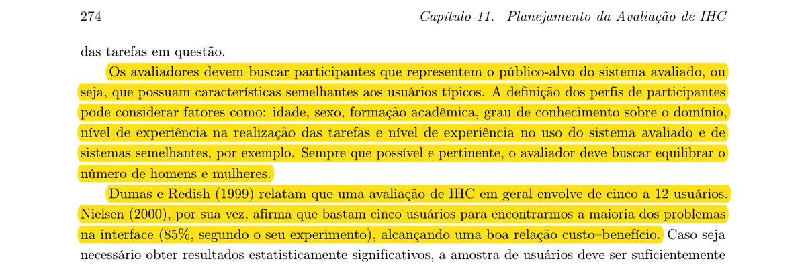
Item 7O planejamento prevê o material de apoio da avaliação com participantes: termo de consentimento livre e esclarecido (TCLE); questionário pré-teste (ou roteiro de entrevista estruturada); roteiro de entrevista pós-teste; instruções e cenários das tarefas; e roteiro de acompanhamento da observação?ConformeEvidência: TCLE na linha “D – Decidir questões éticas”; roteiro em três blocos (aquecimento, inspeção guiada e questionário pós-inspeção) e fichas de registro na seção 3 do storyboard e na seção 3 da análise de tarefas
Citação de origem: “Antes de começar a coletar dados, o avaliador deve preparar e imprimir o material de apoio necessário. No caso de avaliações que envolvam participantes, esse material costuma incluir: • termo de consentimento livre e esclarecido (TCLE), de acordo com os cuidados éticos necessários (veja Seção 7.4); • questionário pré-teste (ou roteiro de entrevista estruturada) para coletar informações dos participantes que podem influenciar a interação usuário–sistema, tais como: características pessoais, experiências anteriores com tecnologia e conhecimento sobre o domínio; • roteiro de entrevista pós-teste para coletar informações sobre a opinião e os sentimentos do participante decorrentes da experiência de uso observada; • instruções e cenários para orientar os participantes sobre as tarefas a serem realizadas; • roteiro de acompanhamento da observação, de modo a facilitar a captura de dados e anotações.”
Referência: Página: 275, Capítulo 11. Planejamento da Avaliação de IHC. Seção 11.7.2 Preparação. Livro: SIMONE DINIZ JUNQUEIRA BARBOSA, BRUNO SANTANA DA SILVA, MILENE SELBACH SILVEIRA, ISABELA GASPARINI, TICIANNE DARIN, GABRIEL DINIZ JUNQUEIRA BARBOSA, Interação Humano-Computador e Experiência do Usuário, 1ª Edição, Rio de Janeiro, 2021. Publicado em: 03/05/2021.
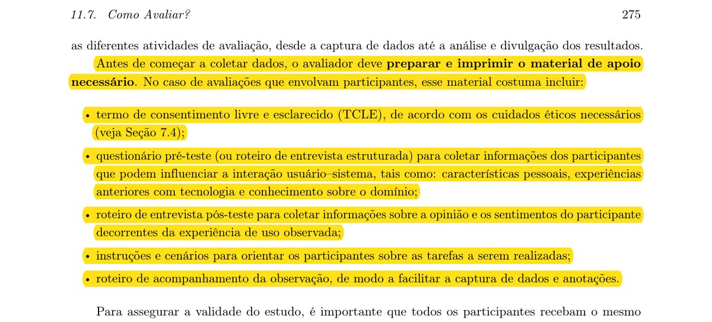
Item 8O tempo planejado é compatível com o recomendado: cada tarefa estimada em, no máximo, 20 minutos (com pausa rápida se for necessário mais tempo) e cerca de uma hora por participante em cada sessão de avaliação?ConformeEvidência: Sessões de 15 a 20 minutos no storyboard, dentro do limite de 20 minutos por tarefa
Citação de origem: “Quando for elaborar os cenários de tarefa, o avaliador deve estar atento ao tempo necessário para os participantes realizarem as tarefas descritas. O tempo estimado para um participante realizar cada tarefa não deveria ultrapassar 20 minutos. Se for necessário mais tempo, o participante deve poder fazer uma pausa rápida para evitar que sua fadiga física ou mental interfira no resultado da avaliação. Podemos sugerir, por exemplo, que o participante desvie o olhar para um ponto distante depois de passar algum tempo olhando somente para a tela, ou faça um alongamento das mãos e dos braços depois de usar o teclado e o mouse durante algum tempo. Cada participante normalmente despende cerca de uma hora numa sessão de avaliação.”
Referência: Página: 275, Capítulo 11. Planejamento da Avaliação de IHC. Seção 11.7.2 Preparação. Livro: SIMONE DINIZ JUNQUEIRA BARBOSA, BRUNO SANTANA DA SILVA, MILENE SELBACH SILVEIRA, ISABELA GASPARINI, TICIANNE DARIN, GABRIEL DINIZ JUNQUEIRA BARBOSA, Interação Humano-Computador e Experiência do Usuário, 1ª Edição, Rio de Janeiro, 2021. Publicado em: 03/05/2021.
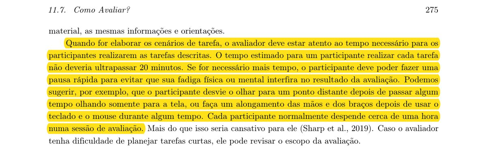
Item 9Está previsto um teste-piloto, conduzido como uma sessão normal de avaliação, para avaliar o próprio planejamento: verificar se a linguagem e os materiais são claros e suficientes, se o sistema, os equipamentos e os softwares de registro funcionam corretamente e se o tempo das tarefas é adequado?ConformeEvidência: Teste-piloto na linha “I”: sessão normal, o que verifica (perguntas, pranchas, gravação e tempo) e resultado fora do resultado final
Citação de origem: “Concluído todo o planejamento da avaliação, é muito importante que o avaliador realize um teste-piloto. O objetivo desse teste é avaliar o próprio planejamento, e analisar se a avaliação, tal como planejada, produz os dados necessários para responder a questões e objetivos do estudo. O avaliador deve conduzir o teste-piloto como se fosse uma sessão normal de avaliação. Dessa forma, ele tem oportunidade de verificar se a linguagem nas explicações e nos materiais fornecidos é clara e objetiva, e se esses materiais contêm informações adequadas e suficientes para orientar o participante durante a avaliação. O teste-piloto também permite ao avaliador verificar se o sistema a ser avaliado, os equipamentos e os softwares para registrar os dados estão funcionando corretamente, e se o tempo necessário para executar as tarefas solicitadas é adequado.”
Referência: Página: 276, Capítulo 11. Planejamento da Avaliação de IHC. Seção 11.7.2 Preparação. Livro: SIMONE DINIZ JUNQUEIRA BARBOSA, BRUNO SANTANA DA SILVA, MILENE SELBACH SILVEIRA, ISABELA GASPARINI, TICIANNE DARIN, GABRIEL DINIZ JUNQUEIRA BARBOSA, Interação Humano-Computador e Experiência do Usuário, 1ª Edição, Rio de Janeiro, 2021. Publicado em: 03/05/2021.
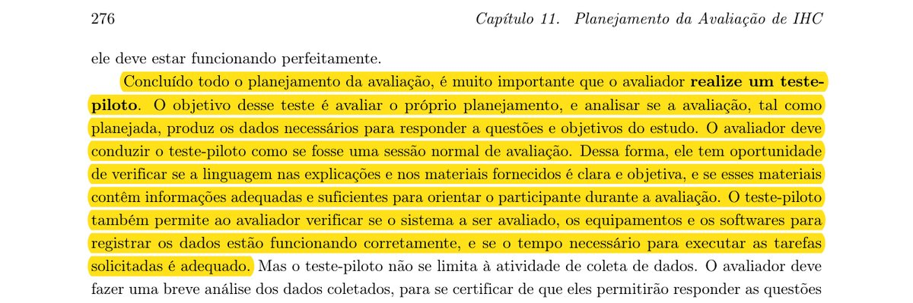
Item 10O planejamento prevê o agendamento, com cada participante, da data, do horário e do local de realização da avaliação?ConformeEvidência: Agendamento com cada participante, registrado na logística das sessões do grupo
Citação de origem: “Confirmada a disponibilidade e o interesse do participante, o avaliador deve agendar com ele a data, o horário e o local para a realização da avaliação.”
Referência: Página: 276, Capítulo 11. Planejamento da Avaliação de IHC. Seção 11.7.2 Preparação. Livro: SIMONE DINIZ JUNQUEIRA BARBOSA, BRUNO SANTANA DA SILVA, MILENE SELBACH SILVEIRA, ISABELA GASPARINI, TICIANNE DARIN, GABRIEL DINIZ JUNQUEIRA BARBOSA, Interação Humano-Computador e Experiência do Usuário, 1ª Edição, Rio de Janeiro, 2021. Publicado em: 03/05/2021.
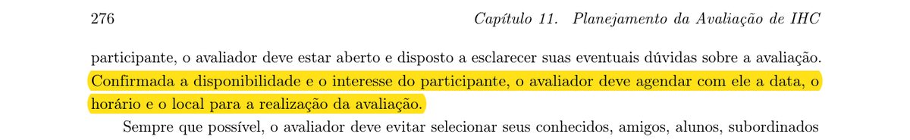
Item 11O cronograma do planejamento ordena no tempo, com datas, as atividades básicas da avaliação, que são preparação, coleta de dados, interpretação, consolidação e relato dos resultados, e prevê o reprojeto do sistema caso a avaliação encontre problemas ou oportunidades de melhoria?ConformeEvidência: Cronograma na linha “I”: preparação, piloto, coleta, interpretação e consolidação, reprojeto e relato, com datas, seguindo o plano de trabalho
Citação de origem: “Os métodos de avaliação de IHC possuem as seguintes atividades básicas: preparação, coleta de dados, interpretação, consolidação e relato dos resultados. Caso a avaliação encontre problemas ou oportunidades de melhoria, também é planejado um reprojeto do sistema.”
Referência: Página: 273, Capítulo 11. Planejamento da Avaliação de IHC. Seção 11.7 Como Avaliar?. Livro: SIMONE DINIZ JUNQUEIRA BARBOSA, BRUNO SANTANA DA SILVA, MILENE SELBACH SILVEIRA, ISABELA GASPARINI, TICIANNE DARIN, GABRIEL DINIZ JUNQUEIRA BARBOSA, Interação Humano-Computador e Experiência do Usuário, 1ª Edição, Rio de Janeiro, 2021. Publicado em: 03/05/2021.
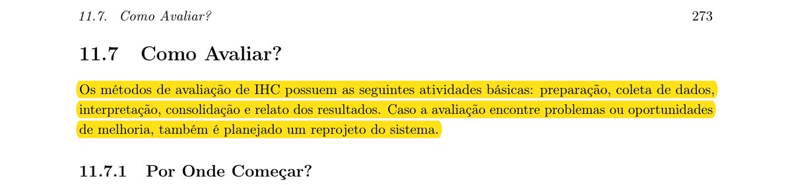
6. D: Decidir as questões éticas
Item 12O planejamento define os cuidados éticos necessários com os participantes: eles são respeitados e não são prejudicados direta ou indiretamente, nem durante os experimentos, nem após a divulgação dos resultados da avaliação?ConformeEvidência: Linha “D – Decidir questões éticas”: TCLE, anonimato, desistência sem prejuízo e foco no artefato, não no participante
Citação de origem: “D Decidir como lidar com as questões éticas. Sempre que usuários são envolvidos numa avaliação, o avaliador deve tomar os cuidados éticos necessários (veja Seção 7.4). Os participantes da avaliação devem ser respeitados e não podem ser prejudicados direta ou indiretamente, nem durante os experimentos, nem após a divulgação dos resultados da avaliação.”
Referência: Página: 280, Capítulo 11. Planejamento da Avaliação de IHC. Seção 11.8 O Framework DECIDE (D: Decidir). Livro: SIMONE DINIZ JUNQUEIRA BARBOSA, BRUNO SANTANA DA SILVA, MILENE SELBACH SILVEIRA, ISABELA GASPARINI, TICIANNE DARIN, GABRIEL DINIZ JUNQUEIRA BARBOSA, Interação Humano-Computador e Experiência do Usuário, 1ª Edição, Rio de Janeiro, 2021. Publicado em: 03/05/2021.
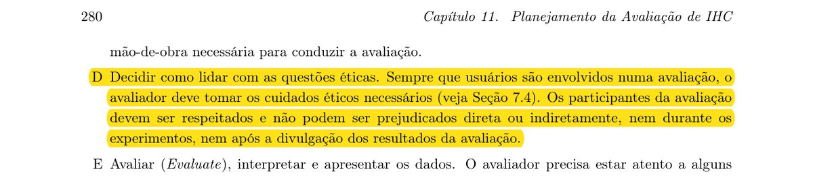
7. E: Avaliar, interpretar e relatar os resultados
Item 13O planejamento considera, antes de tirar conclusões e divulgar resultados: o grau de confiabilidade dos dados; a validade interna do estudo (se o método mede o que deveria medir, com rigor, evitando distorções); a validade externa (até que ponto os resultados podem ser generalizados a outro contexto semelhante); e a validade ecológica (o quanto materiais, métodos e ambiente se assemelham à situação real investigada)?ConformeEvidência: Linha “E – Avaliar e interpretar os dados”: confiabilidade e validades interna, externa e ecológica
Citação de origem: “E Avaliar (Evaluate), interpretar e apresentar os dados. O avaliador precisa estar atento a alguns aspectos da avaliação realizada antes de tirar conclusões e divulgar resultados. Ele deve considerar: o grau de confiabilidade dos dados (i.e., semelhança dos resultados obtidos quando emprega mais de uma vez o mesmo método de avaliação nas mesmas circunstâncias; a validade interna do estudo (i.e., se o método de avaliação mede o que deveria medir, se o faz com rigor e evita que os dados sejam distorcidos); a validade externa do estudo (i.e., até que ponto os resultados podem ser generalizados ou transferidos a um outro contexto semelhante); e a validade ecológica do estudo (i.e., o quanto os materiais, métodos e ambiente de estudo se assemelham à situação real investigada).”
Referência: Página: 280, Capítulo 11. Planejamento da Avaliação de IHC. Seção 11.8 O Framework DECIDE (E: Avaliar). Livro: SIMONE DINIZ JUNQUEIRA BARBOSA, BRUNO SANTANA DA SILVA, MILENE SELBACH SILVEIRA, ISABELA GASPARINI, TICIANNE DARIN, GABRIEL DINIZ JUNQUEIRA BARBOSA, Interação Humano-Computador e Experiência do Usuário, 1ª Edição, Rio de Janeiro, 2021. Publicado em: 03/05/2021.
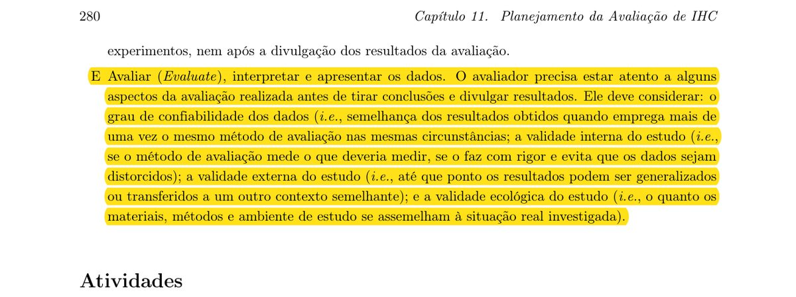
Item 14O planejamento descreve que os dados de cada participante serão interpretados individualmente e depois consolidados e analisados em conjunto, buscando recorrências nos resultados para distinguir as características representativas do grupo das idiossincrasias de participantes individuais?ConformeEvidência: Introdução dos dois relatos: interpretação individual e depois em conjunto, buscando recorrências (relato do storyboard; relato da análise de tarefas)
Citação de origem: “Uma vez concluída a interpretação individual dos dados coletados, seja das previsões dos avaliadores ou das observações das experiências de uso dos participantes, os resultados individuais são consolidados e analisados em conjunto, em uma análise denominada de intersujeito ou interparticipante (Nicolaci-da Costa, 1994; Nicolaci-da Costa et al., 2004). Nessa atividade, os avaliadores buscam recorrências nos resultados de acordo com o método selecionado. As recorrências são importantes porque, ao expressarem resultados comuns a vários participantes de um grupo, permitem fazer uma distinção entre características representativas do grupo e as idiossincrasias de participantes individuais.”
Referência: Página: 279, Capítulo 11. Planejamento da Avaliação de IHC. Seção 11.7.5 Consolidação e Relato dos Resultados. Livro: SIMONE DINIZ JUNQUEIRA BARBOSA, BRUNO SANTANA DA SILVA, MILENE SELBACH SILVEIRA, ISABELA GASPARINI, TICIANNE DARIN, GABRIEL DINIZ JUNQUEIRA BARBOSA, Interação Humano-Computador e Experiência do Usuário, 1ª Edição, Rio de Janeiro, 2021. Publicado em: 03/05/2021.
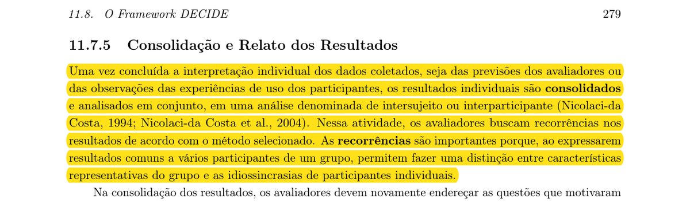
Item 15O planejamento do relato dos resultados prevê incluir: os objetivos e o escopo da avaliação; o método de avaliação empregado; o número e o perfil de usuários e avaliadores participantes; um sumário dos dados coletados (com tabelas e gráficos); o relato da interpretação e análise dos dados; a lista dos problemas encontrados; e um planejamento para o reprojeto do sistema?ConformeEvidência: Tabela 1 do relato do storyboard e Tabela 1 do relato da análise de tarefas: objetivos e escopo, método, participantes, sumário dos dados, interpretação, problemas e reprojeto
Citação de origem: “Finalmente, os avaliadores devem relatar os resultados consolidados, que costumam incluir: • os objetivos e escopo da avaliação; • a forma como a avaliação foi realizada (método de avaliação empregado); • o número e o perfil de usuários e avaliadores que participaram da avaliação; • um sumário dos dados coletados, incluindo tabelas e gráficos; • um relato da interpretação e análise dos dados; • uma lista dos problemas encontrados; • um planejamento para o reprojeto do sistema.”
Referência: Página: 279, Capítulo 11. Planejamento da Avaliação de IHC. Seção 11.7.5 Consolidação e Relato dos Resultados. Livro: SIMONE DINIZ JUNQUEIRA BARBOSA, BRUNO SANTANA DA SILVA, MILENE SELBACH SILVEIRA, ISABELA GASPARINI, TICIANNE DARIN, GABRIEL DINIZ JUNQUEIRA BARBOSA, Interação Humano-Computador e Experiência do Usuário, 1ª Edição, Rio de Janeiro, 2021. Publicado em: 03/05/2021.
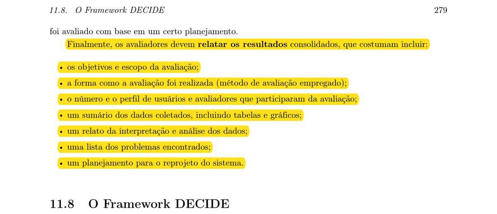
Os 15 itens da lista estão conformes na versão 1.1.
8. Lista de verificação do plano de ensino
| Item | Pergunta | Resposta | Evidência |
|---|---|---|---|
| 2 | O planejamento da avaliação segue o framework DECIDE? | Sim | Tabela 1 do planejamento do storyboard e Tabela 1 do planejamento da análise de tarefas |
| 3 | Descreve os objetivos da avaliação? | Sim | Linha “D – Determinar os objetivos”: ideias de design (storyboard) e problemas na interação no modelo de tarefas (HTA e CTT) |
| 4 | Os métodos de avaliação a serem utilizados, com referência e foto? | Sim | Linha “C” das tabelas DECIDE, com a justificativa; a foto da referência dos métodos está em métodos, modos e motivos do grupo |
| 5 | As questões práticas (recrutamento, perfil, quantidade e razão, presencial ou remota, equipamentos, prazos, orçamento e mão de obra)? | Incompleto | Perfil, quantidade e razão, sessões presenciais ou síncronas, equipamentos, prazos, custo e avaliadores estão na linha “I”; o local de recrutamento dos participantes não foi definido no planejamento |
| 6 | As questões éticas? | Sim | Linha “D – Decidir questões éticas” |
| 7 | A estrutura do relatório do resultado da avaliação? | Sim | Tabela 1 do relato do storyboard e Tabela 1 do relato da análise de tarefas |
| 8 | Um cronograma (data e horário) e local para a avaliação do storyboard e da análise de tarefas? | Incompleto | As datas estão no cronograma da linha “I” e na logística das sessões; o horário e o local ficaram como “a registrar” na logística do grupo |
| 9 | Cada desenho do storyboard está relacionado a uma especificação da análise de tarefas? | Não se aplica | Item sobre o storyboard, e não sobre o planejamento; a relação entre quadros e tarefas está no relato do storyboard da Entrega 5 |
| 10 | A quantidade de storyboards é igual à de integrantes do grupo? | Sim | Victor tem o seu storyboard da Avaliação de Disciplinas |
| 11 | A definição do teste-piloto e a data, com referência e foto? | Sim | Teste-piloto de 14 a 16/10 na linha “I”; a foto da referência está no teste-piloto do grupo |
| 12 | O resultado do teste-piloto não será apresentado no resultado da avaliação? | Sim | Linha “I”: “o resultado do piloto não entra no resultado final” |
| 13 | Os itens que o avaliador deve anotar durante a avaliação (problemas encontrados e prioridade de correção)? | Sim | Tabela 2 do storyboard, Tabelas 2 e 3 da análise de tarefas e escala de severidade, que define a prioridade |
Fonte: Victor Andreozzi de La Rocque Couto (2026), a partir da lista da Apresentação 4 sugerida no plano de ensino. O item 1 avalia o grupo e não se aplica a uma parte individual.
9. Referências
- LAMEIRA, Matheus do Vale. Lista de verificação do Storyboard: NoFluxoUnB (Entrega 4). Universidade de Brasília, 2026. Disponível em: lista de verificação do Storyboard.
- BARBOSA, Simone Diniz Junqueira; SILVA, Bruno Santana da; SILVEIRA, Milene Selbach; GASPARINI, Isabela; DARIN, Ticianne; BARBOSA, Gabriel Diniz Junqueira. Interação Humano-Computador e Experiência do Usuário. 1. ed. Rio de Janeiro: Autopublicação, 2021.
- SALES, André Barros de. Plano de Ensino: Interação Humano-Computador (FGA0173), Turma 01, 2026/2. Brasília: Universidade de Brasília, Faculdade UnB Gama, 2026.
Histórico de versão
| Versão | Data | Descrição | Autor(es) | Revisor(es) | Declaração de ferramenta de IA |
|---|---|---|---|---|---|
| 1.0 | 27/11/2026 | Parte individual da Entrega 4: aplicação dos 15 itens da lista de verificação do Storyboard e dos itens da Apresentação 4 do plano de ensino aos quatro planejamentos | Victor Andreozzi de La Rocque Couto | Felipe Lopes Pedroza | Claude (Anthropic): organização da página, aplicação dos itens das listas aos planejamentos de Victor e conferência das evidências; as respostas foram revisadas pelo autor |